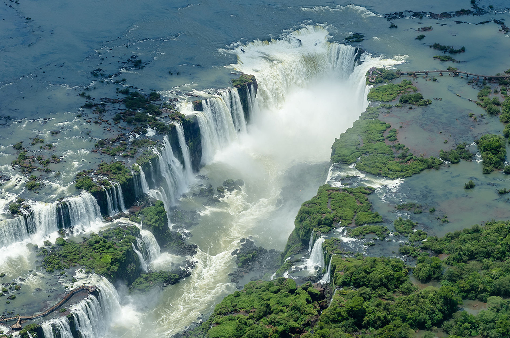
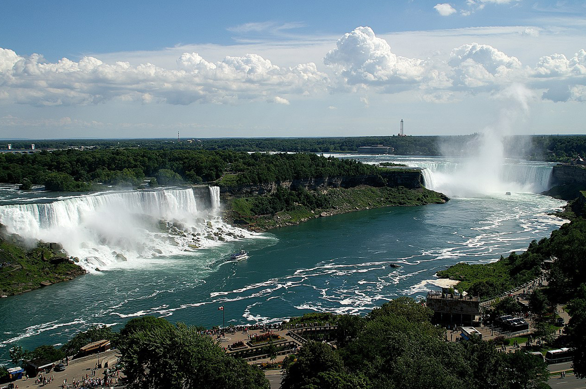
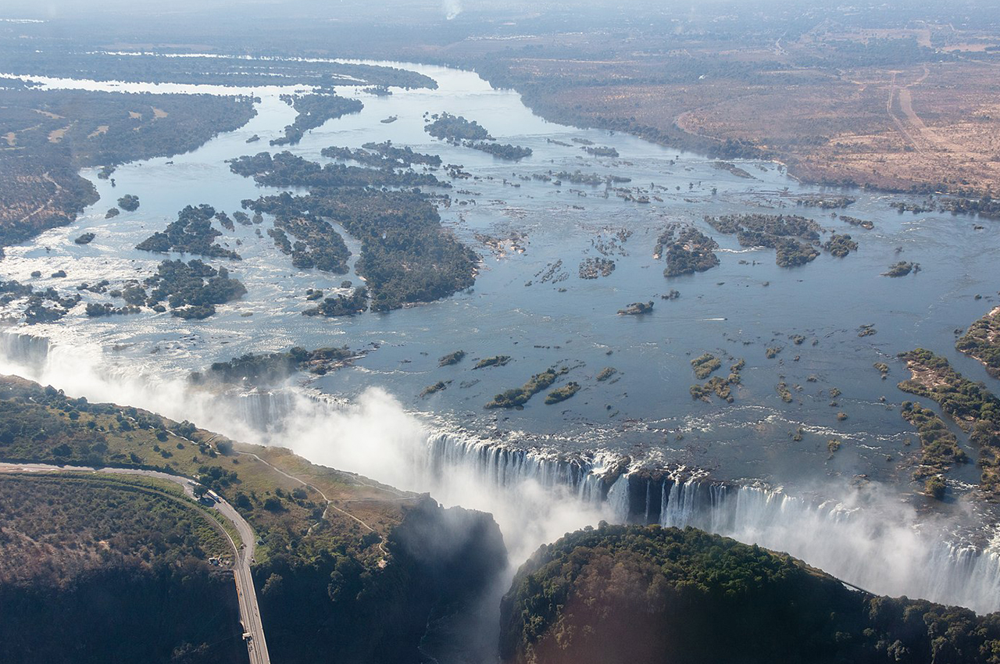

Iguazú Falls or Iguaçu Falls (Guarani: Chororõ Yguasu , Spanish: Cataratas del Iguazú Portuguese: Cataratas do Iguaçu are waterfalls of the Iguazu River on the border of the Argentine province of Misiones and the Brazilian state of Paraná. Together, they make up the largest waterfall system in the world.

Niagara Falls is a group of three waterfalls at the southern end of Niagara Gorge, spanning the border between the province of Ontario in Canada and the state of New York in the United States. The largest of the three is Horseshoe Falls, also known as the Canadian Falls, which straddles the international border of the two countries.

Victoria Falls (Lozi: Mosi-oa-Tunya, "The Smoke That Thunders"; Tonga: Shungu Namutitima, "Boiling Water") is a waterfall on the Zambezi River in southern Africa, which provides habitat for several unique species of plants and animals. It is located on the border between Zambia and Zimbabwe[1] and is one of the world's largest waterfalls, with a width of 1708 m (5604 ft).